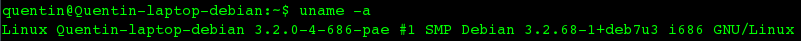
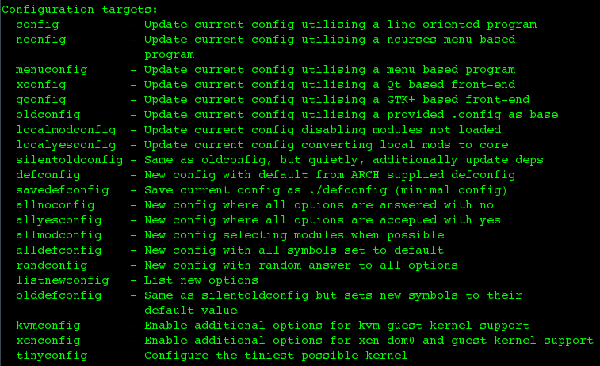
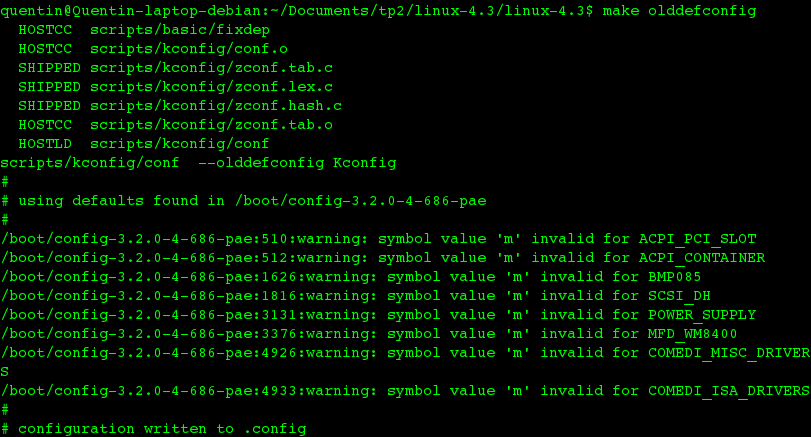
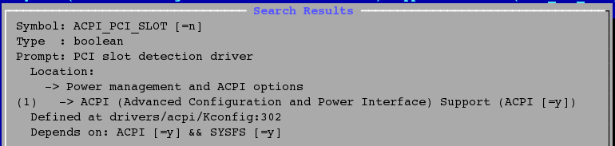
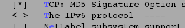

Par Quentin Jeanmonod
Tout d'abord, je commence par déterminer la version actuelle de mon noyau linux à l'aide de uname.
Après avoir téléchargé et extrait la version 4.3 du kernel (dernière version stable actuellement, 04 novembre 2015), je visite les dossiers créés par la commande tar xpvf linux-4.3.tar.xz -C ./linux-4.3.
J'utilise make help afin de déterminer comment créer le fichier .config pour la compilation.
L'option olddefconfig m'a l'air d'être la manière la plus simple de configurer en se basant sur la config actuelle, c'est donc cette option que j'utiliserai.
Après cette étape, j'utilise make menuconfig afin de pouvoir modifier manuellement certaines entrées, telles que le protocole IpV6 qui m'est inutile. Puisque j'ai eu différentes erreurs de symboles invalides après avoir utiliser make olddefconfig, j'ai commencé par vérifier ces symboles en les recherchant avec /.

Le configurateur est plutôt malin puisqu'il leur a assigné automatiquement des valeurs (que j'imagine être les valeurs par défaut). Je ne les ai donc pas changé, n'ayant aucune idée de leurs utilités (et l'aide avec ? ne m'a guère rendu service).
J'ai enlevé le protocole IpV6, la radio amateur, l'option permettant d'avoir plus de 8 CPU. J'ai également enlevé tous les drivers de cartes et chipsets graphiques ne correspondant pas à mon laptop. J'ai également activé le logo au démarrage car je trouvais ça rigolo.
J'ai malheureusement perdu tous les screenshots suivants, mon linux n'ayant pas survécu à ce qui va suivre.
Après avoir fini la configuration, j'ai lancé la compilation avec make -j8, ce qui était une mauvaise idée car mon vieux laptop n'est plus ventilé correctement, il a donc surchauffé au milieu de cette opération. Après l'avoir relancé, j'ai effectué un make clean. J'ai ensuite posé mon laptop dans l'abri anti-atomique de la maison, où il fait approximativement 5°C et lancé make -j2. Cette fois la compilation s'est passée sans problème et j'ai pu l'installer avec sudo make install suivit de sudo make modules_install.
Après avoir redémarré mon laptop, j'ai bien un nouveau kernel dans le GRUB, qui s'appelle 4.3.0. Lorsque je boot dessus, rien ne charge après le kernel. Je peux lancé une interface console avec ctrl-alt-f1 mais la plupart des commandes ne marchent pas (par exemple ifconfig). Je pense qu'il me manque une étape où je configure le fichier de chargement de l'OS. Ce qui m'échappe est que mon ancien kernel (qui d'abord marchait niquel) a maintenant été contaminé par le même problème.
A noter qu'en mode "sans échec", j'ai accès à des commandes plus sympatiques que les commandes kernel de base, j'ai donc pu réinstallé les drivers graphiques de ma carte graphique manuellement, mais il est possible que c'est cette étape qui a cassé mon ancien kernel...
D'après mon analyse, il est fort probable que mon kernel soit compilé et installé correctement. Malheureusement, il manque une étape cruciale à son utilisation, mais mes recherches sont restées infructueuses.